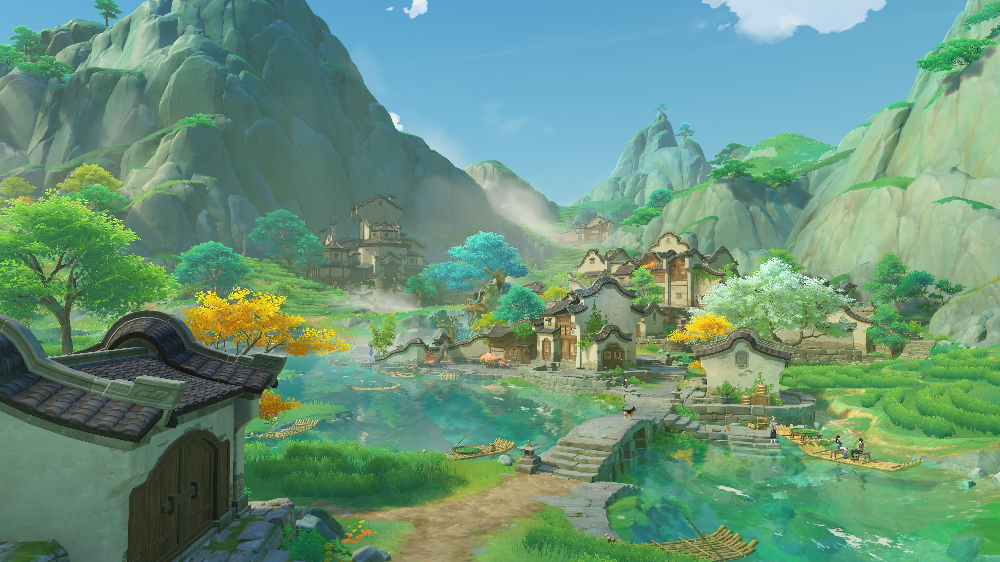
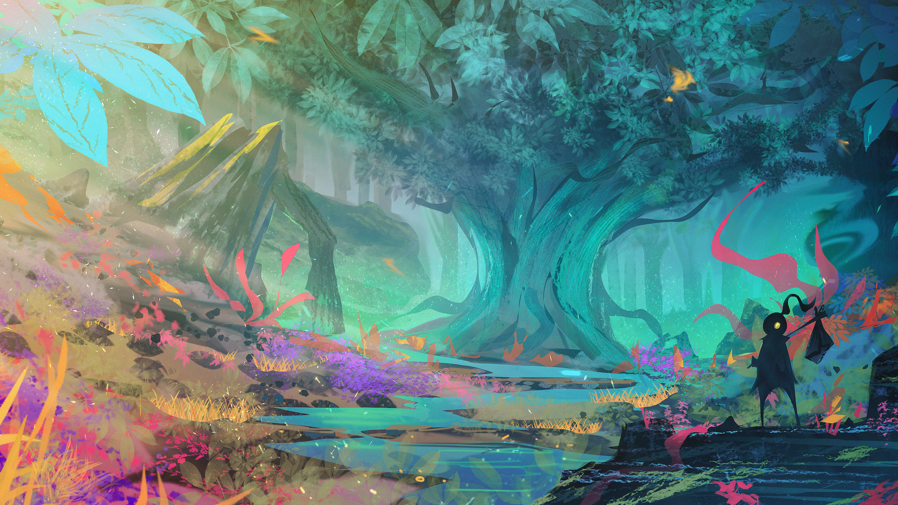
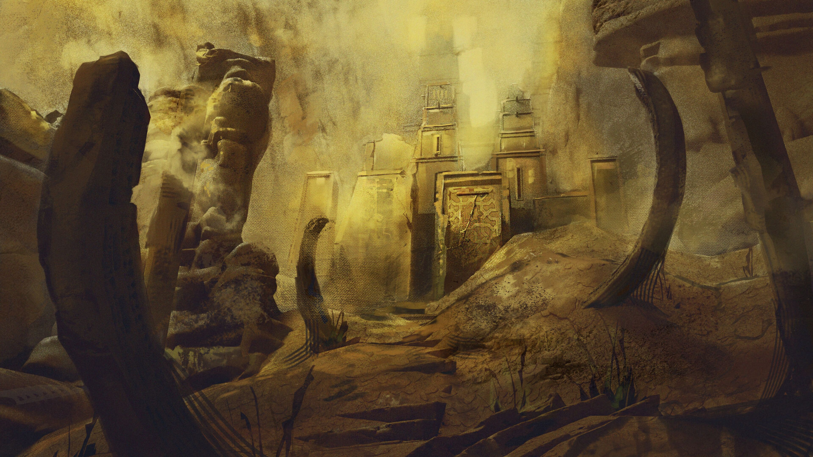

Starting Village
AvailableA peaceful settlement where aspiring cultivators begin their journey, learn the basics, and prepare for the challenges ahead.
Difficulty: Easy
View MissionExplore the vast lands of the cultivation world, from peaceful villages to dangerous ancient ruins. Follow the path of a young cultivator as they overcome challenges and journey toward ascension.
Discover the lands that await you on your journey. Each region offers new challenges, powerful enemies, and opportunities to advance your cultivation.

A peaceful settlement where aspiring cultivators begin their journey, learn the basics, and prepare for the challenges ahead.
Difficulty: Easy
View Mission
A mysterious forest filled with spiritual herbs and supernatural beasts. Cultivators must gather rare resources and overcome their first major trial.
Difficulty: Moderate
View MissionA powerful cultivation sect located high in the mountains. Skilled cultivators train here to master advanced techniques and strengthen their spiritual abilities.
Difficulty: Hard
Mission Locked
The remains of an ancient civilization filled with forgotten secrets, powerful artifacts, and dangerous guardians. Only experienced cultivators dare to explore these ruins.
Difficulty: Very Hard
Mission Locked